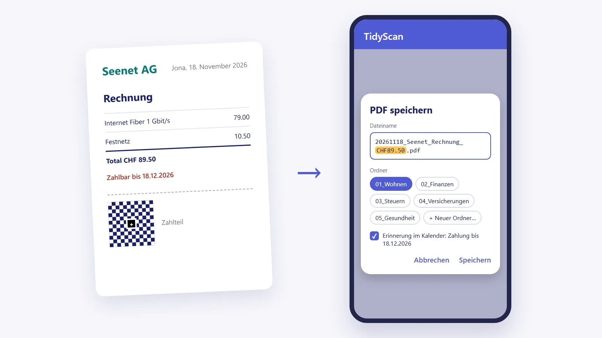
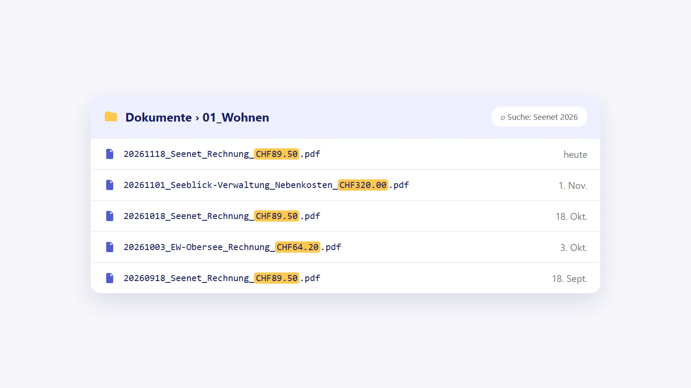

Rechnungen scannen und ablegen: so findest du jede wieder
Aktualisiert am 18. November 2026 · Silvan, Gründer von TidyScan · 6 Min. Lesezeit
Wer Rechnungen scannen will, will zwei Dinge: das Papier loswerden und jede Rechnung später in zehn Sekunden wiederfinden. Das Scannen selbst ist dabei der kleinste Teil. Entscheidend ist, was danach passiert: wie die Datei heisst, in welchem Ordner sie landet und ob du die Zahlungsfrist im Blick behältst. Hier steht, wie das mit dem Handy in fünf Schritten geht, mit einer Methode, die auch nach Jahren noch funktioniert.
Vom Stapel zur leeren Ablage: so mache ich es
Früher häuften sich meine Rechnungen auf einem Stapel. Wenn ich eine brauchte, von der ich wusste, dass sie irgendwo herumlag, hat mich die Suche durch die ganze Wohnung getrieben.
Seit ich TidyScan entwickelt habe, scanne ich Rechnungen sofort, und Rechnungen per E-Mail lege ich ebenfalls sofort ab, nach dem Inbox-Zero-Prinzip. Aus den Augen, aus dem Sinn: kein mentaler Ballast mehr. Alles landet in meinen Zielordnern auf Google Drive. Die Papierrechnung zerreisse ich nach dem Ablegen und Bezahlen mehrfach, dann kommt sie in den Müll.
Warum der Dateiname wichtiger ist als der Ordner
Ein Scan heisst ab Werk meistens etwas wie Scan_20261118_093512.pdf. Nach drei Monaten liegen dort fünfzig solche Dateien, und du öffnest eine nach der anderen.
Ein guter Dateiname beantwortet die drei Fragen, mit denen du später suchst: Wann? Von wem? Was?
20261118_Swisscom_Rechnung_CHF89.50.pdf
- Datum zuerst im Format JJJJMMTT: So sortiert jeder Ordner automatisch chronologisch.
- Absender als zweites: So findest du alle Rechnungen eines Anbieters mit einer Suche.
- Art und bei Rechnungen der Betrag: So siehst du schon in der Dateiliste, worum es geht.
Mehr zum Schema steht im Ratgeber Dokumente richtig benennen.
Rechnungen scannen und ablegen in 5 Schritten
- Rechnung scannen. Lege die Rechnung auf einen dunklen Untergrund und halte das Handy gerade darüber. Ein Scanner mit Kantenerkennung schneidet die Seite zu und entzerrt sie. Bei mehrseitigen Rechnungen alle Seiten in denselben Scan nehmen.
- Namen prüfen. Ergänze Datum, Absender und Art, oder lass das die App machen. TidyScan liest die erste Seite direkt auf dem Handy und schlägt einen Namen nach dem Schema oben vor.
- Ordner wählen. Eine Rechnung gehört dorthin, wo du sie suchen würdest: Wohnen, Versicherungen, Steuern. Eine bewährte Aufteilung findest du im Ratgeber Ordnerstruktur mit Vorlage.
- Frist eintragen. Steht auf der Rechnung «zahlbar bis» oder «innert 30 Tagen», trag den Termin gleich in den Kalender ein. Dann kann die Rechnung im Ordner verschwinden, ohne dass du sie vergisst.
- Bezahlen und Papier entsorgen. Erst wenn der Scan gut lesbar ist, kommt das Papier weg. Rechnungen mit Adresse und Kundennummer gehören in den Schredder oder zerrissen in den Müll, nicht ganz ins Altpapier.

Wer so Rechnungen scannt, braucht pro Rechnung weniger als eine Minute, und die Ablage bleibt leer.
TidyScan erscheint in Kürze bei Google Play.
Schweizer QR-Rechnungen: Betrag und Frist gratis dazu
Schweizer Rechnungen tragen seit der Umstellung auf die QR-Rechnung einen QR-Code mit Zahlungsempfänger und Betrag. Beim Rechnungen scannen muss diese Angaben niemand abtippen: TidyScan liest den Code und setzt Empfänger und Betrag in den Dateinamen. Enthält der Code eine Zahlungsfrist, bietet die App einen Kalendereintrag an. Details stehen im Ratgeber QR-Rechnung scannen.
Rechnungen aus E-Mail und eBill gleich mitablegen
Viele Rechnungen kommen heute als PDF per E-Mail. Damit sie nicht im Postfach liegen bleiben, gehören sie in dieselbe Ablage wie die gescannten:
- Im E-Mail-Programm den Anhang öffnen.
- «Teilen» antippen und TidyScan wählen.
- Die App benennt die Datei nach demselben Schema und legt sie in denselben Ordner.
Das funktioniert auch mit eBill: Im E-Banking das PDF der Rechnung herunterladen und über «Teilen» oder «Öffnen mit» an TidyScan geben. Das lohnt sich, weil bezahlte eBill-Rechnungen nicht unbegrenzt im E-Banking bleiben. Wie das genau geht, steht im Ratgeber QR-Rechnung scannen.
So hast du am Ende eine Ablage für Papier, E-Mail und eBill, nicht drei. Wer seine Rechnungen digitalisieren will, fängt am besten genau hier an: bei allem, was ab heute kommt.

Rechnungen archivieren: wie lange?
Faustregeln für Privatpersonen. Im Einzelfall hilft eine Fachperson weiter.
Schweiz: Privatpersonen haben grundsätzlich keine gesetzliche Aufbewahrungspflicht. Trotzdem lohnt es sich, Rechnungen zu archivieren, solange jemand eine Forderung daraus geltend machen könnte. Das Obligationenrecht kennt dafür zwei Verjährungsfristen:
- 10 Jahre für Forderungen allgemein (Art. 127 OR),
- 5 Jahre unter anderem für Mietzinse und andere periodische Leistungen, Handwerksarbeit, Kleinverkauf von Waren und ärztliche Behandlungen (Art. 128 OR).
Verlass dich nicht darauf, dass die Bank im Notfall Belege liefert: Sie kann die Zahlung zeigen, aber nicht die Rechnung dahinter.
Deutschland: Auch hier gibt es für Privatpersonen grundsätzlich keine Aufbewahrungspflicht. Eine Ausnahme: Rechnungen für Handwerker- und andere Arbeiten an Haus, Wohnung oder Grundstück musst du zwei Jahre aufbewahren (§ 14b UStG).
Für die Steuererklärung brauchst du einen Teil deiner Rechnungen ohnehin, in der Schweiz wie in Deutschland und Österreich. Welche das sind und wie lange du sie behalten solltest, steht im Ratgeber Belege für die Steuererklärung.
Im Original behalten solltest du wichtige Verträge, Urkunden und alles, dessen Verlust dich ernsthaft treffen würde. Gewöhnliche Rechnungen und Quittungen kannst du digital archivieren.
Fazit: Rechnungen scannen, sobald sie kommen
Rechnungen scannen ist schnell erledigt. Den Unterschied macht die Routine danach: ein fester Dateiname mit Datum, Absender und Betrag, ein klarer Ordner, die Frist im Kalender. Wer so auch Belege scannen und E-Mail-Rechnungen ablegen lässt, hat nach wenigen Wochen eine Ablage, in der jede Rechnung in Sekunden gefunden ist. Mehr Ideen für den Einstieg stehen im Ratgeber Papierloses Büro zuhause, und alle Funktionen von TidyScan auf der Startseite.
Quellen
- Schweiz: Obligationenrecht, Art. 127 und 128 (Wortlaut abgerufen am 18.11.2026)
- Deutschland: Umsatzsteuergesetz, § 14b (abgerufen am 18.11.2026)
- Schweiz: BDO, Aufbewahrungspflichten von Privatpersonen in der Schweiz (1.4.2021)
Häufige Fragen
Reicht ein Foto, oder brauche ich zum Rechnungen scannen einen Scanner?
Ein Handy genügt. Eine Scan-App erkennt die Kanten, entzerrt die Seite und speichert ein PDF. Das ist lesbarer als ein normales Foto und fasst mehrere Seiten in einer Datei zusammen.
PDF oder JPG?
PDF. Es hält mehrere Seiten zusammen und öffnet sich auf jedem Gerät gleich.
Muss die Ablage in der Cloud liegen?
Nein. TidyScan speichert in einen Ordner deiner Wahl: auf dem Handy, in Google Drive oder in einem anderen Speicher. Eine eigene Cloud hat die App nicht.
Wie lange soll ich gescannte Rechnungen archivieren?
In der Schweiz verjähren die meisten Forderungen nach zehn Jahren, Mietzinse, Handwerker- und Arztrechnungen nach fünf. So lange lohnt es sich, Rechnungen zu archivieren. Digital braucht das kaum Platz.
Kann ich auch Belege scannen, zum Beispiel Quittungen?
Ja. Quittungen und Kassenbelege scannst du genau wie Rechnungen. Thermopapier bleicht mit der Zeit aus, darum lohnt sich der Scan bei Garantiebelegen besonders.